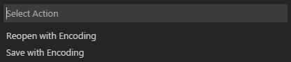

At its heart, Visual Studio Code is a code editor. Like many other code editors, VS Code adopts a common user interface and layout of an explorer on the left, showing all of the files and folders you have access to, and an editor on the right, showing the content of the files you have opened.

Files, Folders & Projects
VS Code is file and folder based - you can get started immediately by opening a file or folder in VS Code.
On top of this, VS Code can read and take advantage of a variety of project files defined by different frameworks and platforms. For example, if the folder you opened in VS Code contains one or more package.json, project.json, tsconfig.json, or .NET Core Visual Studio solution and project files, VS Code will read these files and use them to provide additional functionality, such as rich IntelliSense in the editor.
Basic Layout
VS Code comes with a simple and intuitive layout that maximizes the space provided for the editor while leaving ample room to browse and access the full context of your folder or project. The UI is divided into five areas:
- Editor The main area to edit your files. You can open up to three editors side by side.
- Side Bar Contains different views like the Explorer to assist you while working on your project.
- Status Bar Information about the opened project and the files you edit.
- View Bar Located on the far left-hand side, this lets you switch between views and gives you additional context-specific indicators, like the number of outgoing changes when Git is enabled.
- Panels You can display different panels below the editor region for output or debug information, errors and warnings, or an integrated terminal.
Each time you start VS Code, it opens up in the same state it was in when you last closed it. The folder, layout, and opened files are preserved.
VS Code allows up to three visible editors at any one time, allowing you to edit or view up to three files together side by side. The open files in each editor are displayed with tabbed headers (Tabs) at the top of the editor region. To learn more about tabbed headers, see the Tabs topic.
Tip: You can move the Side Bar to the right hand side (View > Move Sidebar) or toggle its visibility (⌘B (Windows, Linux Ctrl+B)).
Hide the Menu Bar (Windows, Linux)
You can hide the Menu Bar on Windows and Linux with the View > Toggle Menu Bar command (Ctrl+U). You can still access the Menu Bar by pressing the Alt key.
Zen Mode
Zen Mode lets you focus on your code by hiding all UI except the editor (no Activity Bar, Status Bar, Sidebar and Panel) and going to full screen. Zen mode can be toggled using the View menu, Command Palette or by the shortcut ⌘K Z (Windows, Linux Ctrl+K Z). Double Esc exits Zen Mode. The transition to full screen can be disabled via zenMode.fullScreen. Zen Mode can be further tuned by the following settings: zenMode.hideStatusBar, zenMode.hideTabs, zenMode.fullScreen and zenMode.restore.
Side by Side Editing
You can have up to three editors open side by side.
If you already have one editor open, there are multiple ways of opening another editor to the side of the existing one:
- Ctrl (Mac: Cmd) click on a file in the Explorer.
- ⌘\ (Windows, Linux Ctrl+\) to split the active editor into two.
- Open to the Side from the Explorer context menu on a file.
- Click the Split Editor button in the upper right of an editor.
- Drag and drop a file to the either side of the editor region.
- Ctrl+Enter (Mac: Cmd+Enter) in the Quick Open (⌘P (Windows, Linux Ctrl+P)) file list.
Whenever you open another file, the editor that is active will display the content of that file. So if you have two editors side by side and you want to open file ‘foo.cs’ into the right hand editor, make sure that editor is active (by clicking inside it) before opening file ‘foo.cs’.
When you have more than one editor open you can switch between them quickly by holding the Ctrl (Mac: 'Cmd') key and pressing 1, 2, or 3.
Tip: You can resize editors and reorder them. Drag and drop the editor title area to reposition or resize the editor.
Explorer
The Explorer is used to browse, open, and manage all of the files and folders in your project.
After opening a folder in VS Code, the contents of the folder are shown in the Explorer. You can do many things from here:
- Create, delete, and rename files and folders.
- Move files and folders with drag and drop.
- Use the context menu to explore all options.
Tip: You can drag and drop files into the Explorer from outside VS Code to copy them.
VS Code works very well with other tools that you might use, especially command-line tools. If you want to run a command-line tool in the context of the folder you currently have open in VS Code, right-click the folder and select Open in Command Prompt (or Open in Terminal on Mac or Linux).
You can also navigate to the location of a file or folder in the native Explorer by right-clicking on a file or folder and selecting Reveal in Explorer (or Reveal in Finder on the Mac or Open Containing Folder on Linux).
Tip: Type ⌘P (Windows, Linux Ctrl+P) (Quick Open) to quickly search and open a file by its name.
By default, VS Code excludes some folders from the explorer (for example. .git). Use the files.exclude setting to configure rules for hiding files and folders from the explorer.
Tip: This is really useful to hide derived resources files, like \*.meta in Unity, or \*.js in a TypeScript project. For Unity to exclude the \*.cs.meta files, the pattern to choose would be: "**/*.cs.meta": true. For TypeScript, you can exclude generated JavaScript for TypeScript files with: "**/*.js": {"when": "$(basename).ts"}.
Open Editors
At the top of the Explorer is a section labeled OPEN EDITORS. This is a list of active files or previews. These are files you previously opened in VS Code that you’re working on. For example, a file will be listed in the OPEN EDITORS section if you:
- Make a change to a file.
- Double-click a file’s header.
- Double-click a file in the Explorer.
- Open a file that is not part of the current folder.
Just click an item in the OPEN EDITORS section, and it becomes active in VS Code.
Once you are done with your task, you can remove files individually from the OPEN EDITORS section, or you can remove all files by using the View: Close All Editors or View: Close All Editors in Group actions.
Configuring the Editor
VS Code gives you many options to configure the editor. You can set options globally through user settings or per project/folder through workspace settings. Settings values are kept in a settings.json file.
Select File > Preferences > User Settings (or press ⇧⌘P (Windows, Linux Ctrl+Shift+P), type
userand pressEnter) to edit the user settings.json file.Select File > Preferences > Workspace Settings (or press ⇧⌘P (Windows, Linux Ctrl+Shift+P), type
workspand pressEnter) to edit the workspace settings.json file.
Note for Mac users: The Preferences menu is under Code not File. For example, Code > Preferences > User Settings.
You will see the VS Code Default Settings in the left window and your editable settings.json on the right. You can easily filter settings in the Default Settings using the search box at the top. Copy a setting over to the editable settings.json on the right by clicking on the edit icon after the setting. Settings with a fixed set values allow you to pick a value as part of their edit icon menu.
After editing your settings, type ⌘S (Windows, Linux Ctrl+S) to save your changes. The changes will take effect immediately.
Note: Workspace settings will override User settings and are useful for sharing project specific settings across a team.
Configuring Keyboard Shortcuts
VS Code supports keyboard shortcuts for nearly every editor action.
- Keyboard Shortcuts Reference - Learn the most commonly used and popular keyboard shortcuts by downloading the reference sheet.
- Install a Keymap extension - Use the keyboard shortcuts of your old editor (such as Sublime Text, Atom, and Vim) in VS Code by installing a Keymap extension.
- Customize Keyboard Shortcuts - Change the default keyboard shortcuts to fit your style.
Multiple selections (multi-cursor)
VS Code supports multiple cursors for fast simultaneous edits. You can add secondary cursors (rendered thinner) with Alt+Click. Each cursor operates independently based on the context it sits in. A common way to add more cursors is with ⌥⌘↓ (Windows Ctrl+Alt+Down, Linux Shift+Alt+Down) or ⌥⌘↑ (Windows Ctrl+Alt+Up, Linux Shift+Alt+Up) that insert cursors below or above.
Note: Your graphics card driver (for example NVIDIA) might overwrite these default shortcuts.

⌘D (Windows, Linux Ctrl+D) selects the word at the cursor, or the next occurrence of the current selection.

Tip: You can also add more cursors with ⇧⌘L (Windows, Linux Ctrl+Shift+L), which will add a selection at each occurrence of the current selected text.
Shrink/expand selection
Quickly shrink or expand the current selection. Trigger it with ⌃⇧⌘← (Windows, Linux Shift+Alt+Left) and ⌃⇧⌘→ (Windows, Linux Shift+Alt+Right)
Here’s an example of expanding the selection with ⌃⇧⌘→ (Windows, Linux Shift+Alt+Right):
Column (box) selection
Hold Shift and Alt while dragging to do column selection:
There are also default key bindings for column selection on Mac and Windows, but not on Linux.
| Key | Command | Command id |
|---|---|---|
| ⇧⌥⌘↓ (Windows Ctrl+Shift+Alt+Down, Linux ) | Column Select Down | cursorColumnSelectDown |
| ⇧⌥⌘↑ (Windows Ctrl+Shift+Alt+Up, Linux ) | Column Select Up | cursorColumnSelectUp |
| ⇧⌥⌘← (Windows Ctrl+Shift+Alt+Left, Linux ) | Column Select Left | cursorColumnSelectLeft |
| ⇧⌥⌘→ (Windows Ctrl+Shift+Alt+Right, Linux ) | Column Select Right | cursorColumnSelectRight |
| ⇧⌥⌘PageDown (Windows Ctrl+Shift+Alt+PageDown, Linux ) | Column Select Page Down | cursorColumnSelectPageDown |
| ⇧⌥⌘PageUp (Windows Ctrl+Shift+Alt+PageUp, Linux ) | Column Select Page Up | cursorColumnSelectPageUp |
You can edit your keybindings.json to bind them to something more familiar if you wish.
Save / Auto Save
By default, VS Code requires an explicit action to save your changes to disk, ⌘S (Windows, Linux Ctrl+S).
However, it’s easy to turn on Auto Save, which will save your changes after a configured delay or when focus leaves the editor. With this option turned on, there is no need to explicitly save the file. The easiest way to turn on Auto Save is with the File > Auto Save toggle which turns on and off save after a delay.
For more control over Auto Save, open User Settings or Workspace Settings and find the associated settings:
files.autoSave: Can have the values:off- to disable auto save.afterDelay- to save files after a configured delay.onFocusChange- to save files when focus moves out of the editor of the dirty file.onWindowChange- to save files when the focus moves out of the VS Code window.
files.autoSaveDelay: Configures the delay in milliseconds whenfiles.autoSaveis configured toafterDelay.
Hot Exit
VS Code will remember unsaved changes to files when you exit by default. Hot exit is triggered when the application is closed via File > Exit (Code > Quit on macOS) or when the last window is closed.
Hot exit can be disabled by changing the setting files.hotExit to false.
Search Across Files
VS Code allows you to quickly search over all files in the currently-opened folder. Simply type ⇧⌘F (Windows, Linux Ctrl+Shift+F) and type in your search. Search results are grouped into files containing the search term, with an indication of the hits in each file and its location. Expand a file to see a preview of all of the hits within that file. Then single-click on one of the hits to view it in the editor.
Tip: We support regular expression searching in the search box, too.
You can configure advanced search options by typing ⇧⌘J (Windows, Linux Ctrl+Shift+J). This will show additional fields to configure the search.
In the two input boxes below the search box, you can include and exclude files. Click on the toggle to the right to enable the glob pattern syntax:
*to match one or more characters in a path segment?to match on one character in a path segment**to match any number of path segments, including none{}to group conditions (e.g.{**/*.html,**/*.txt}matches all HTML and text files)[]to declare a range of characters to match (e.g.,example.[0-9]to match onexample.0,example.1, …)
VS Code excludes some folders by default to reduce the number of search results that you are not interested in (for example: node_modules). Open settings to change these rules under the files.exclude and search.exclude section.
Tip: From the Explorer you can right-click on a folder and select Find in Folder to search inside a folder only.
You can also Search and Replace across files. Expand the Search widget to display the Replace text box.
When you type text into the Replace text box, you will see a diff display of the pending changes. You can replace across all files from the Replace text box, replace all in one file or replace a single change.
Tip: You can quickly reuse a previous search term by using ⌥↓ (Windows, Linux Alt+Down) and ⌥↑ (Windows, Linux Alt+Up) to navigate through your search term history.
Command Palette
VS Code is equally accessible from the keyboard. The most important key combination to know is ⇧⌘P (Windows, Linux Ctrl+Shift+P), which brings up the Command Palette. From here, you have access to all of the functionality of VS Code, including keyboard shortcuts for the most common operations.
The Command Palette provides access to many commands. You can execute editor commands, open files, search for symbols, and see a quick outline of a file, all using the same interactive window. Here are a few tips:
- ⌘P (Windows, Linux Ctrl+P) will let you navigate to any file or symbol by simply typing its name
- ⌃⇧Tab (Windows, Linux Ctrl+Shift+Tab) will cycle you through the last set of files opened
- ⇧⌘P (Windows, Linux Ctrl+Shift+P) will bring you directly to the editor commands
- ⇧⌘O (Windows, Linux Ctrl+Shift+O) will let you navigate to a specific symbol in a file
- ⌃G (Windows, Linux Ctrl+G) will let you navigate to a specific line in a file
Type ? into the input field to get a list of available commands you can execute from here:
Quick File Navigation
The Explorer is great for navigating between files when you are exploring a project. However, when you are working on a task, you will find yourself quickly jumping between the same set of files. VS Code provides two powerful commands to navigate in and across files with easy-to-use key bindings.
Hold Ctrl and press Tab to view a list of all files open in an editor group. To open one of these files, use Tab again to pick the file you want to navigate to, then release Ctrl to open it.
Alternatively, you can use ⌃- (Windows Alt+Left, Linux Ctrl+Alt+-) and ⌃⇧- (Windows Alt+Right, Linux Ctrl+Shift+-) to navigate between files and edit locations. If you are jumping around between different lines of the same file, these shortcuts allow you to navigate between those locations easily.
Tip: You can open any file by its name when you type ⌘P (Windows, Linux Ctrl+P) (Quick Open).
File Encoding Support
Set the file encoding globally or per workspace by using the files.encoding setting in User Settings or Workspace Settings.
You can view the file encoding in the status bar.
Click on the encoding button in the status bar to reopen or save the active file with a different encoding.

Then choose an encoding.
Launching from the Command Line
You can launch VS Code from the command line to quickly open a file, folder, or project. Typically, you open VS Code within the context of a folder. We find the best way to do this is to simply type:
|
Tip: We have instructions for Mac users in our Setup topic that enable you to start VS Code from within a terminal. We add the VS Code executable to the
PATHenvironment variable on Windows and Linux automatically during installation.
Sometimes you will want to open or create a file. If the specified files does not exist, VS Code will create them for you:
|
Tip: You can have as many file names as you want separated by spaces.
Additional Command line arguments
Here are optional command line arguments you can use when starting VS Code at the command line via code:
| Argument | Description |
|---|---|
-h or --help | Print usage |
-v or --version | Print VS Code version (e.g. 0.10.10) |
-n or --new-window | Opens a new session of VS Code instead of restoring the previous session (default). |
-r or --reuse-window | Forces opening a file or folder in the last active window. |
-g or --goto | When used with file:line:character?, opens a file at a specific line and optional character position. This argument is provided since some operating systems permit : in a file name. |
| file | Name of a file to open. If the file doesn’t exist, it will be created and marked as edited. You can specify multiple files by separating each file name with a space. |
| file:line:character? | Name of a file to open at the specified line and optional character position. You can specify multiple files in this manner, but you must use the -g argument (once) before using the file:line:character? specifier. |
| folder | Name of a folder to open. You can specify multiple folders. |
-d or --diff | Open a file difference editor. Requires two file paths as arguments. |
--locale | Set the display language (locale) for the VS Code session. Supported locales are: en-US, zh-TW, zh-CN, fr, de, it, ja, ko, ru, es |
--disable-extensions | Disable all installed extensions. Extensions will still be visible in the Extensions: Show Installed Extensions dropdown but they will never be activated. |
--list-extensions | List the installed extensions. |
--install-extension | Install an extension. Provide the full extension name publisher.extension as an argument. |
--uninstall-extension | Uninstall an extension. Provide the full extension name publisher.extension as an argument. |
-w or --wait | Wait for the window to be closed before returning |
For both files and folders, you can use absolute or relative paths. Relative paths are relative to the current directory of the command prompt where you run code.
If you specify more than one file or folder at the command line, VS Code will open only a single instance.
Opening VS Code with URLs
In Windows and macOS, you can also open projects and files using the platform’s URL handling mechanism. Use the following URL formats to:
Open a project
|
Open a file
|
Open a file to line and column
|
Window Management
VS Code has some options to control how windows should be opened or restored between sessions.
The settings window.openFoldersInNewWindow and window.openFilesInNewWindow are provided to configure opening new windows or reusing the last active window for files or folders and possible values are default, on and off.
If configured to be default, we will make the best guess about reusing a window or not based on the context from where the open request was made. Flip this to on or off to always behave the same. For example, if you feel that picking a file or folder from the File menu should always open into a new window, set this to on.
Note: There can still be cases where this setting is ignored (for example, when using the -new-window or -reuse-window command line option).
The window.reopenFolders setting tells VS Code how to restore the opened windows of your previous session. By default, VS Code will
reopen the last opened folder you worked on (setting: one). Change this setting to none to never reopen any folders and always start with an empty VS Code instance. Change it to all to restore all folders you worked on during your previous session.
Next Steps
You’ve covered the basic user interface - there is a lot more to VS Code. Read on to find out about:
- Intro Video - Setup and Basics - Watch a tutorial on the basics of VS Code.
- User/Workspace Settings - Learn how to configure VS Code to your preferences through user and workspace settings.
- Editing Evolved - Lint, IntelliSense, Lightbulbs, Peek and Goto Definition, and more
- Integrated Terminal - Learn about the integrated terminal for quickly performing command line tasks from within VS Code.
- IntelliSense - VS Code brings smart code completions.
- Debugging - This is where VS Code really shines
- Customization - Themes, settings, and keyboard bindings
Common Questions
Q: Is it possible to globally search and replace?
A: Yes, expand the Search view text box to include a replace text field. You can search and replace across all the files in your workspace. Note that if you did not open VS Code on a folder, the search will only run on the currently open files.
Q: How do I turn on word wrap?
A: You can control word wrap through the editor.wrappingColumn setting. By default editor.wrappingColumn is set to 300 characters. You can adjust the column width or set the value to zero to wrap on the editor viewport width:
|
You can toggle word wrap for the VS Code session with ⌥Z (Windows, Linux Alt+Z). Restarting VS Code will pick up the persisted editor.wrappingColumn value.
You can also add vertical column rulers to the editor with the editor.rulers setting which takes an array of column character positions where you’d like vertical rulers.
Q: How can I show more files in the OPEN EDITORS section?
A: You can configure the appearance of OPEN EDITORS through your settings. For example, you can set the maximum number of visible files before a scroll bar appears via the explorer.openEditors.visible setting and whether the OPEN EDITORS section should dynamically set its height via explorer.openEditors.dynamicHeight.